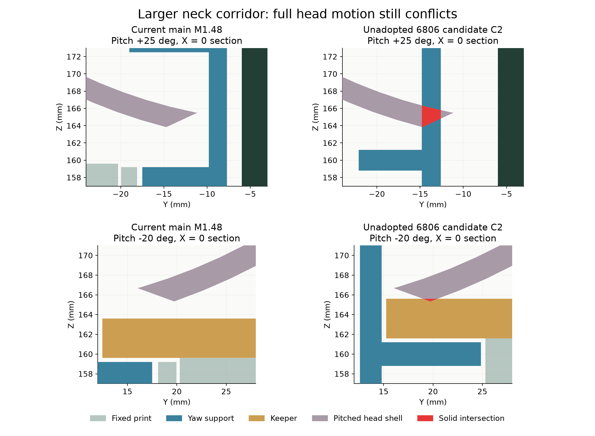
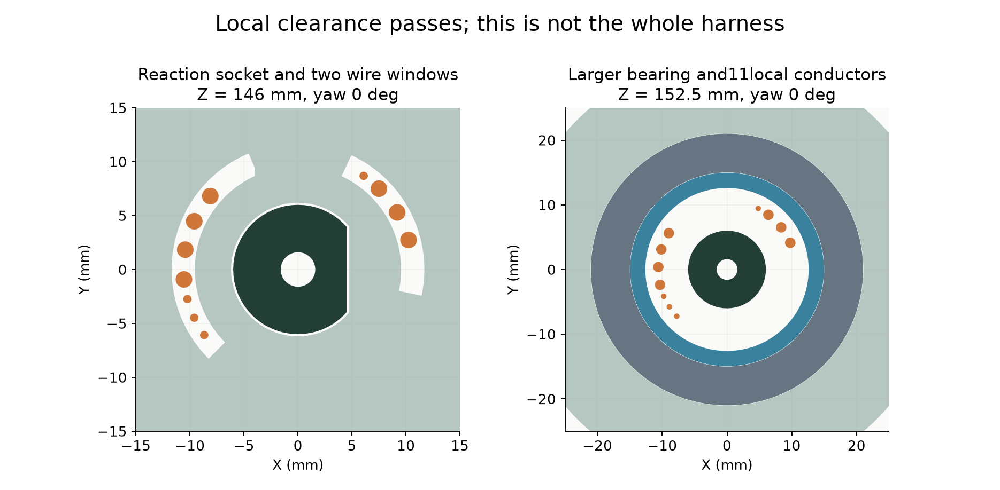

局部通道有进展，整机运动仍有冲突
候选未采用，完整线束未完成。 较大内孔轴承允许保留反力孔壁并放入11根局部导线；完整打印件复核后，发现支撑颈部和防脱压板碰头壳，尚不能应用。主模型、STL和动画保持M1.48。

蓝：偏航支撑；金色：防脱压板；紫：转动后的头壳；红：实体相交。截面来自当前模型和独立候选，点击看大图。
| 检查 | 结果及限制 |
|---|
| 11根局部线共存 | 通过130个有限姿态。线间保守间隙下界0.668mm；上下端尚未连接实际端口，七根较粗线尚未选型。 |
| 固定座与舵机座 | 指定原D形孔壁、两条承力连接、上部舵机座保留。三件打印实体连通；不等于强度通过。 |
| 装入与工具 | 轴承装入、压板侧装和落座、螺钉及工具局部路径通过。只检查刚体，完整带线装配未完成。 |
| 完整头部运动 | 未通过：偏航支撑碰后壳；压板碰前/后壳。限位首次采样接触±63.75°，也需回到原目标区间。 |
| 轴承尺寸参考 | NSK6806ZZ30×42×7，原6804ZZ20×32×7；只建厂家边界，未选购。轴承目录质量增加7g；整机预算仍未关闭。 |

这是通过局部检查的通道。头壳冲突未解决前，不据此批准结构或制作线束。
到货前仍剩5类
完整线束、反力夹初装、未定采购件及安装、厂家传动与插接资料、质量与驱动预算。机械与硬件输入仍有工作，不能表述为只等实物。
完整范围和命令整体复核厂家来源本轮状态交付校验剩余清单
PROTOTYPE / UNVALIDATED · 无制造、采购或主模型替换。